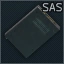
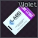
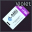
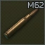
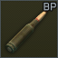
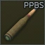
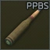

Russian Ritual Response Group
"Gear up, were going dark"
Menu
Welcome Operative

In the war-ravaged world of Escape from Tarkov, cultists are a mysterious and formidable adversary that players must learn to hunt effectively. These enigmatic factions, known for their eerie rituals and devout loyalty to their dark beliefs, roam the streets and forests of Tarkov, posing a significant threat to scavengers and PMC operatives alike. To successfully hunt cultists, it is essential to approach with caution, for they are often armed with deadly close-quarters weapons and demonstrate an uncanny ability to blend into their surroundings. Employing stealth, well-placed shots, wether it be alone or with your squadmates is key to taking down these fanatical foes and securing their valuable loot. This page will show you how to do just that, by providing an in depth guide on different strategies, weapons, angles and more to not only take out the mysterious cult, but also adapt to the dangerous situations you might find yourself in.
Knowing your enemey
Basic information on cultists class, loot, and loadouts
Cultists prefer to dwell in the dark of the night. They can be found between the hours of 22:00 and 7:00 in varying group sizes on locations:
- Factory
- Customs
- Shoreline
- Woods
The Cult of tarkov features its own distinctive classes, those being the Priest, leaders within the cult who are strong and tricky foes, deploying their underlings to fight in their steed. and the Warriors devoted followers of the priest who are very aggressive when provoked. While the two differ in class, their relevant loadouts remain relatively similar. below are cultists healthpools and some highly sought after gear worth picking up.
| Priest | Warrior |  |
|---|
| Weapons | Ammunition | Armour | Items |
|---|---|---|---|


|
 |


|

 


|
 |
 | ||

 

|
|||

|

|
||

|
|||